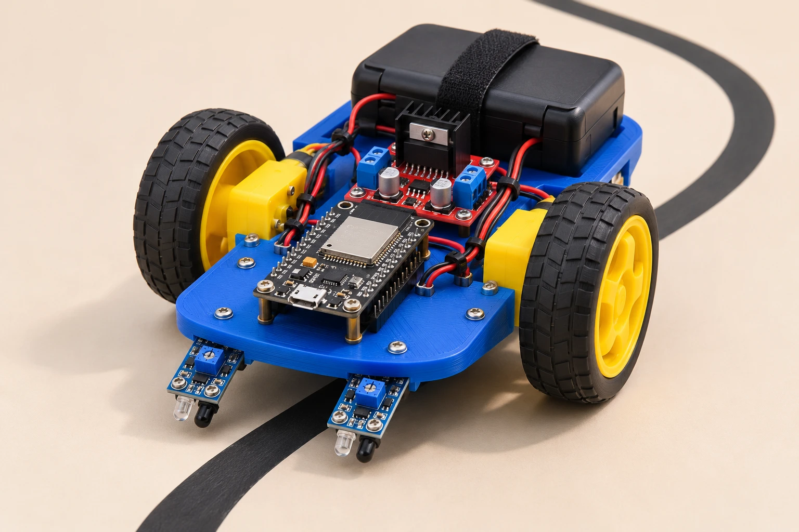
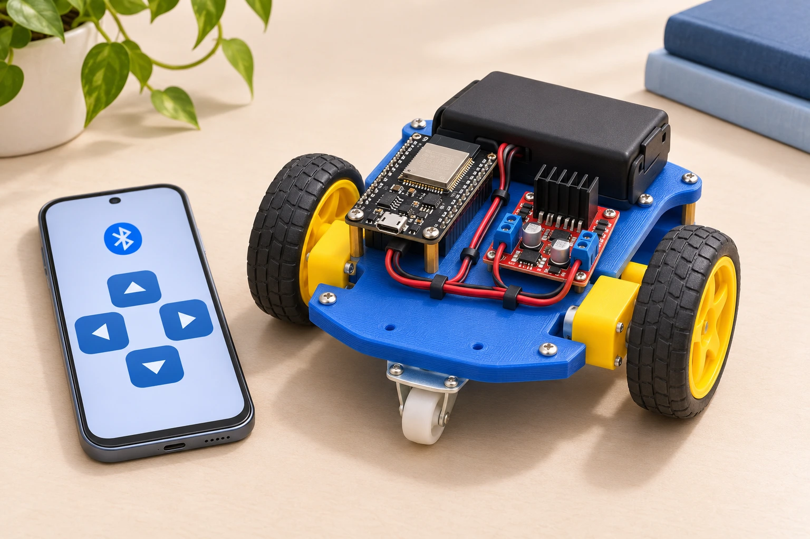
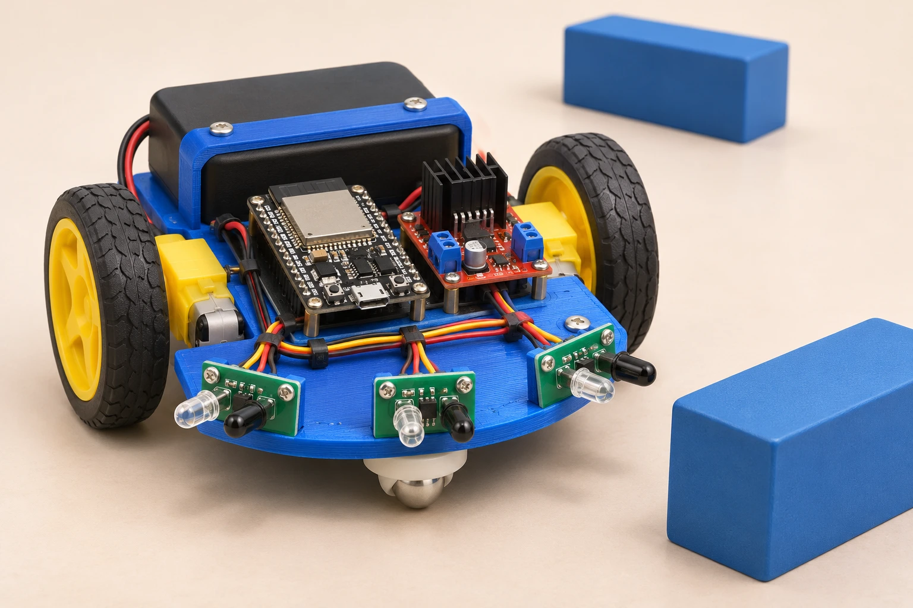

THE ROBOTICS WORKSHOP / DECEMBER 2026
Exclusively for students ofThamarai International School, Kumbakonam
Don’t just imagine it.
Build your robot.
Connect the wires. Bring the code to life. Build three robot configurations with one reusable ESP32 kit—and take it home to keep exploring.
Classes VI–XOne hands-on dayLimited seats
SMALL ROBOT. BIG POSSIBILITIES. BUILD / 01

FROM COMPONENTS
TO SOMETHING THAT MOVES.ASSEMBLE IT. CODE IT. MAKE IT YOURS.↓ EXPLORE THE BUILDS
Creative illustration.
03Robot configurations
you build & test
01Reusable kit
you take home
₹3,500Per student
Kit & learning resources included
DEC ’26At your school
Exact date to be announced
01 / THE BUILDS
One robot platform.
Three ways to make it move.
You’ll rebuild and reprogram the same kit between projects. Each configuration teaches a different way to control a robot.

01 / Bluetooth RC robotYOUR COMMAND. ITS NEXT MOVE.
PROJECT 01 / WIRELESS CONTROLDrive it yourself.
Build a Bluetooth RC robot and send commands from a compatible phone or computer. Make it move forward, reverse and turn.
- Meet the ESP32, motor driver and DC motors
- Upload and run a Bluetooth control program
- Understand how left and right wheels steer
YOUR CHALLENGE Drive through a short route. Take control.
02 / Two-IR line followerTWO READINGS. ONE PATH.
PROJECT 02 / AUTOMATIC LINE TRACKINGGive it a path.
Use two downward-facing IR reflectance sensors to detect the line position beneath the robot. Compare the left and right readings, then steer to stay on the dark track.
- Read left and right IR sensor values
- Use if/else logic to correct steering
- Tune the robot’s movement on a marked track
YOUR CHALLENGE Follow the black line without your commands.

03 / Three-IR obstacle avoiderSENSE → DECIDE → MOVE
PROJECT 03 / AUTONOMOUS RESPONSETeach it to decide.
Add three front-facing IR proximity sensors. Help the robot decide when to move, stop, reverse or turn as it encounters an obstacle.
- Understand left, centre and right sensing
- Build a simple obstacle-response decision table
- Test objects and adjust sensor thresholds
YOUR CHALLENGE Detect an obstacle. Find a way around.
Creative illustrations.
02 / FROM CURIOUS TO CAPABLE
Real components.
Real “I made that” moments.
Our student engineering team guides you through assembly, programming and troubleshooting, so you understand what makes your robot work.
01Understand
Explore controllers, sensors, motors, power connections and basic electronics safety.
02Assemble
Build the robot platform. Check the wiring and test the wheels before moving on.
03Program
Work with Bluetooth commands, sensor readings and simple decision-making logic.
04Test & improve
Run practical challenges, spot errors and discover how small changes affect behaviour.
03 / THE LEARNING COMES HOME
The day ends.
Your building doesn’t.
Keep the kit. Keep the code. Keep asking “what if?”
Take what you build beyond the workshop. Revisit the projects, change the programs and experiment with your own ideas.
Made for your next experiment.One kit can be reassembled and reprogrammed as your confidence grows.
01Your own robotics kit
The reusable ESP32 robot kit and required electronic components are yours to keep.
Full project source code
Receive the programs for all three configurations, ready to revisit and modify.
Documents & learning materials
Use the supplied project documents and resources to continue practising.
Support after the workshop
Continue receiving guidance with workshop projects after the day. Support details will be shared with participants.
N↗BUILT BY STUDENTS. FOR THE NEXT GENERATION.
A familiar school.
A new kind of classroom experience.
Led by school alumnus Mohammed Nafees H and the NAVION ROBOTICS student engineering team, this workshop brings practical robotics into Thamarai’s IT / Computer Laboratory.
04 / GOOD TO KNOW
A few questions,
answered.
Who can attend?
This workshop is exclusively for students in Classes VI to X at Thamarai International School, Kumbakonam.
Will I build three separate robots?
You’ll build and test three different configurations using one reusable ESP32 robot kit. You’ll reassemble and reprogram the kit between projects, then take that kit home.
What does the ₹3,500 fee include?
Your take-home robotics kit, required electronic components, guided instruction, practical testing, full project code, documents and support after the workshop.
When and where will it happen?
It is planned for December 2026 in the school IT / Computer Laboratory. The exact date will be announced after coordination with the school.
Can I change the code later?
Yes. You’ll receive the full project source code and documents so you can modify the programs and keep experimenting with your kit.
How do I register?
Complete the registration form with a parent or guardian. Once payment is successful, we’ll send you the link to join the workshop WhatsApp group for further details.
YOUR FIRST ROBOT IS WAITING.
Ready to build
something that moves?
December 2026 · Thamarai International School, Kumbakonam
Limited seats · Classes VI–X